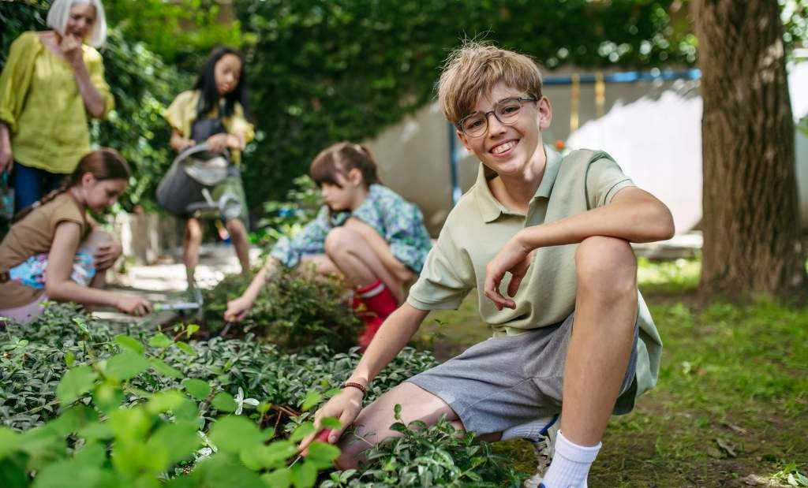
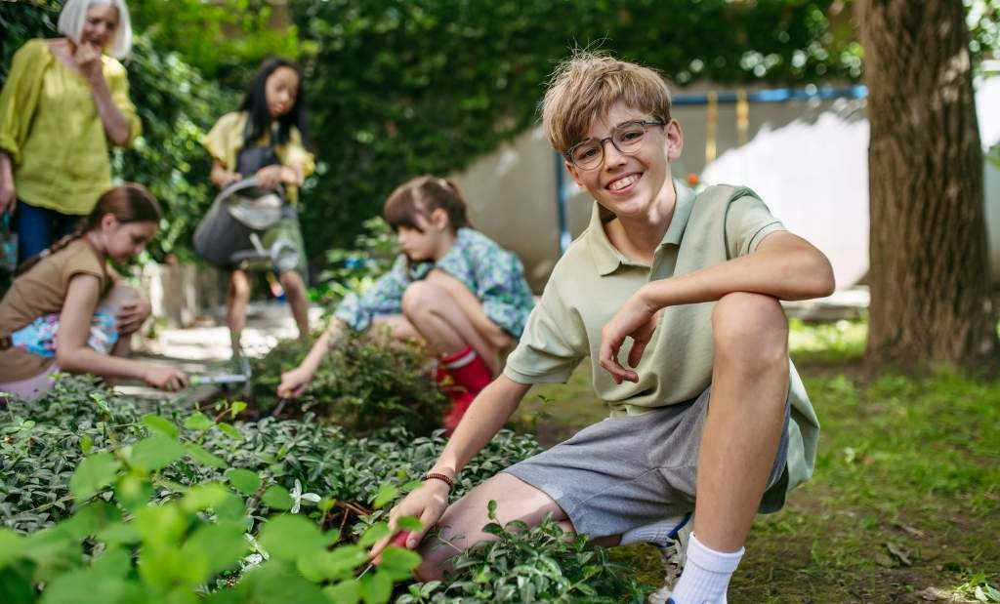

Projeto “Educar para o Futuro”
Oferece reforço escolar e aulas de leitura, escrita e matemática para crianças em idade escolar, com o objetivo de reduzir a evasão escolar e melhorar o desempenho acadêmico.
Oferece reforço escolar e aulas de leitura, escrita e matemática para crianças em idade escolar, com o objetivo de reduzir a evasão escolar e melhorar o desempenho acadêmico.
Capacita crianças e adolescentes em tecnologia e informática básica, incluindo noções de computação, internet segura e introdução à programação.
Realiza ações de saúde preventiva com atendimentos médicos e odontológicos gratuitos, vacinação e palestras sobre higiene, nutrição e autocuidado.
Oferece apoio psicológico e emocional para crianças em situação de vulnerabilidade, com rodas de conversa e acompanhamento profissional voluntário.
Promove oficinas de arte, música, teatro e dança como formas de expressão e inclusão social, incentivando a criatividade e a autoestima.
Insentivar a prática esportiva como instrumento de disciplina e convivência, com modalidades como futebol, capoeira e atletismo.
Voltado a adolescentes em transição para o mercado de trabalho, oferece oficinas de empreendedorismo, educação financeira e cidadania.
Ensina educação ambiental por meio de oficinas de reciclagem, hortas comunitárias e campanhas de preservação do meio ambiente.

 
